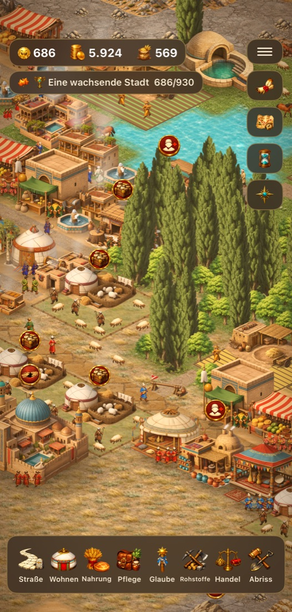
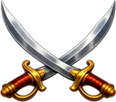
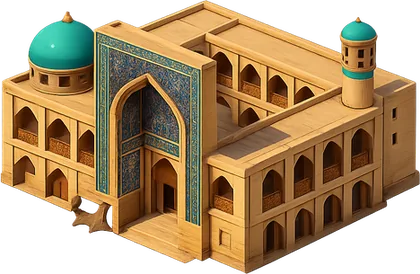
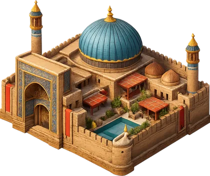
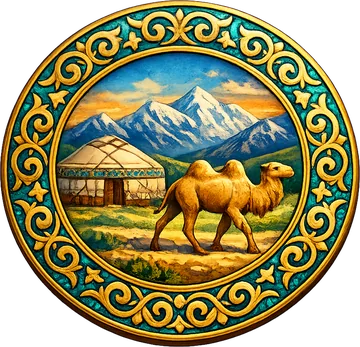

Führe fünfzehn Familien durch die Steppe.
Baue für sie ein Reich an der Seidenstraße auf.
English · Русский · Türkçe · Deutsch · Français · Español
Im Geist der großen Aufbauspiele, angesiedelt zwischen den Jurten, Karawansereien und türkisblauen Kuppeln Zentralasiens. Jede Straße, jeder Brunnen und jeder Schrein erfüllt einen Zweck.
Lass Schafe weiden, säe Weizen, brich Stein, schürfe Eisen. Mache aus Wolle Filz, aus Lehm Töpferwaren und aus Kokons Seide.
Jede der fünf großen Städte sucht andere Waren. Verkaufe vor deinem Stadttor oder schick eine eigene Karawane gen Osten – für einen besseren Preis.
Hat dein Volk Nahrung und Wasser, Segen und Bildung, zieht es aus Filzzelten in Windturm-Anwesen – und aus dem Lager wird eine Hauptstadt.
Deine Wohnhäuser entwickeln sich weiter, sobald die Bedürfnisse ihrer Bewohner erfüllt sind. Sorge erst für Wasser, dann für Nahrung, später für den Segen der Schamanen, Heiler, Erzählungen und Musik, eine Schule, ein Badehaus und eine ruhige, grüne Straße – und sieh zu, wie jedes Haus eine Stufe aufsteigt.



Wasserträger, Schamanen, Erzähler und Steuereintreiber ziehen durch deine Straßen, und jedes Haus, an dem sie vorbeikommen, wird versorgt. Kinder spielen, Frauen tragen Wasser vom Brunnen, und aus jedem Herd steigt Rauch auf.
Je größer deine Stadt, desto mehr Schreine verlangt jeder Gott. Baue neue Schreine oder erweitere einen Schrein zum Heiligtum und dann zum Tempel – er zählt dann doppelt und dreifach. Oder feiere dem Gott zu Ehren ein Fest.

Herr des endlosen Blaus über der Steppe.

Hüterin der Herdfeuer, der Mütter und der Kinder.

Gebieter über alles unter der Erde.

Die Karawanen der großen Städte kommen nacheinander. Für die Waren, die in ihrer Heimatstadt besonders gefragt sind, zahlt jede Karawane 50 Prozent mehr. Heb deine Seide für Samarkand auf, verkaufe deinen Filz im Winter nach Buchara – und überschwemme den Markt nie mit einer Ware.
Deine Berater behalten die Kornspeicher, die Götter, die Schatzkammer und die Banditen am Horizont im Auge und sagen dir offen, was die Stadt als Nächstes braucht.
 Wesir BekzatOberster Berater
Wesir BekzatOberster Berater Gesandter AltynbekAngelegenheiten des Khans
Gesandter AltynbekAngelegenheiten des Khans Älteste AigerimDas Volk
Älteste AigerimDas Volk Schamane KökbörüDie Götter
Schamane KökbörüDie Götter Hauptmann TemirSicherheit
Hauptmann TemirSicherheit YusufKarawanenführer
YusufKarawanenführer
Für seine Kriege verlangt er Pferde, Filz oder Gold. Schick sie ihm und steig vom Clanältesten zur rechten Hand des Khans auf. Bleibst du ihm dreimal hintereinander etwas schuldig, reitet sein Heer los.

Sobald deine Stadt die nötige Einwohnerzahl erreicht, schaltest du die prächtigsten Bauwerke frei. Für den Bau brauchst du Münzen, Stein und Holz.

Lehrer tragen Gelehrsamkeit in die feinsten Häuser.

Alle drei Götter, verehrt unter offenem Himmel.

Höhere Steuereinnahmen, ein zufriedeneres Volk. Nur einer pro Stadt.

Das Wunder deiner Stadt: über Jahre Stein um Stein in vier Bauabschnitten errichtet.
Eine Kampagne vom ersten Jurtenlager bis zur Goldenen Horde, durch Szenarien wie „Der lange Winter“, „Banditenland“ und „Das Seuchenjahr“. Oder gründe im freien Spiel „Die endlose Steppe“ dein eigenes Khanat – mit Zielen, die nie ausgehen.


Das Tutorial und das erste Kampagnenszenario kannst du kostenlos und ohne Zeitlimit spielen. Mit einem einmaligen Kauf schaltest du das gesamte Spiel dauerhaft frei. Dein Spielstand bleibt auf deinem Gerät, und du musst dich nirgends anmelden.

Bald für iPhone und iPad. Der Einstieg ist kostenlos.